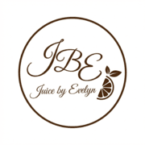

BACK TO SELECTED WORK
FEATURED CASE STUDY · WEBSITE & DIGITAL MARKETING
Juice by
Evelyn.
Developed the website, personally worked on its SEO improvements and set up Google Search Console to monitor how the brand was being discovered in search.
Website developmentSearch visibilityAnalyticsEmail marketing
Visit live website
FRESHLY PRESSED.
FRESHLY BAKED.JUICE BY EVELYN · ACCRA, GHANA

THE PROJECT
A website is only the beginning.
Juice by Evelyn is a fruit juice and pastry brand in Accra, Ghana. The website gives customers a place to discover the brand, explore its offering and make contact.
My contribution extended beyond building the website. I worked on the measurement and marketing foundations needed to understand how people find the site, interact with it and stay connected with the brand.
01 / THE CHALLENGE
Good visibility starts with being discoverable.
The website appeared in search when people used the exact brand name, but it was not showing for broader, relevant juice-related searches. I personally worked on the website’s SEO and set up Google Search Console to monitor indexing and search performance, with the goal of improving discovery beyond branded searches.
02 / WHAT I WORKED ON
01Search monitoring
Personally set up Google Search Console and used it to monitor indexing and search performance, investigate the branded-search visibility issue and identify opportunities to improve visibility for relevant juice-related searches.
GOOGLE SEARCH CONSOLE
02Analytics & behaviour
Implemented Google Analytics to better understand traffic and visitor interactions, including shopping journey events relevant to cart abandonment analysis.
GOOGLE ANALYTICS
03Email capture
Integrated Mailchimp and Brevo email collection tools to help build an audience for future newsletters, promotions and customer retention activity.
MAILCHIMP · BREVO
04Tracking foundations
Added cookie-based analytics tracking to support measurement of visitor interactions, with consent and privacy requirements to be respected.
COOKIE-BASED TRACKING
03 / THE OUTCOME
From online presence to measurable marketing.
The project delivered a live brand website, SEO work and a configured Google Search Console property, alongside a foundation for website analytics and email audience collection. These tools make it possible to assess performance and guide ongoing optimisation based on evidence.
No search-ranking, traffic-growth or cart-abandonment reduction figures are claimed here. Add verified data from Search Console and Analytics when available.
MY ROLEWebsite development & digital marketing implementation
TOOLS & TECHNOLOGIESHTML · CSS · JavaScript · Google Search Console · Google Analytics · Mailchimp · Brevo